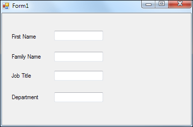
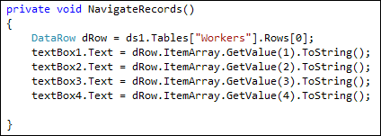
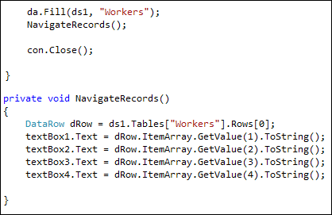
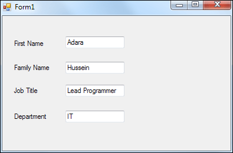

Getting at the data in the Dataset
At the moment, we have a Dataset filled with records from the database table. But we can't actually see anything. What we'd like to do is to display the records on a form. We'll put the data in textboxes.
Add four text boxes and four labels to your form, so that the design looks something like ours below:

When the form loads, we want the first record from the Dataset to appear in the text boxes.
We'll do all that from a method. So just after your form load code, add a new method called NavigateRecords. It's not going to return a value, so you can make it a void method.
Trying to get at the data from a Dataset can be a torturous business, because there are so many properties and methods to access. The easiest way is to first set up a new DataRow variable:
DataRow dRow;
This will refer to a row from the Dataset:
DataRow dRow = ds1.Tables["Workers"].Rows[0];
So after the equals sign, we have this:
ds1.Tables["Workers"].Rows[0];
You first type the name of your Dataset, which is ds1 for us. After a dot, select Tables from the IntelliSense list. Tables is a collection, and stores a list of all the available Tables (a Table is just that grid that we mentioned). To tell C# which Table you want, type its name between square brackets and a pair of double quotes. After another dot, select Rows from the IntelliSense list. In between square brackets, you specify which Row from the Dataset you want. Row zero [0] is the first Row in the Table.
So add that line to your NavigateRecords method.
But that's not the end of it! We've only pointed to a Row in the Dataset. We also need to specify a column.
To get at a Column in the Row, the code is this:
dRow.ItemArray.GetValue(1).ToString()
We've started with our Row object, which we've called dRow. After a dot, select ItemArray from the IntelliSense list. This is an Array of all the Items (Columns) in your Row. We had five columns in our database table: ID, first_name, family_name, job_title, and department. ItemArray starts at zero, so ID will be Item 0, first_name will be Item 1, last_name will be Item 2, job_title will be Item 3, and department will be Item 4.
After another dot, then, select GetValue from the list. As its name suggests, this will Get the Values from your Columns. In between round brackets, you need the Item number from the array. GetValue(1) will refer to the first_name column in our Dataset. Finally, you need to convert it to a string with ToString. Once converted to a string, you can put it straight into a text box.
Putting all that together, add the following code to your NavigateRecords method:

If you prefer, you can put everything on one line. But it will be a very long line. Here it is:
textBox1.Text = ds1.Tables["Workers"].Rows[0].ItemArray.GetValue(1).ToString();
But you are almost ready to test it all out. The final thing to do is to add a call to your NavigateRecords method. Put the call just before the con.Close line, as in the image below:

Now you can test it out. Run your programme and the form should display the first record from your database. It should look like ours:

Now that we have one record displayed, we can add buttons to navigate backwards and forward through all the records in our database. We'lldo that in the next part below.